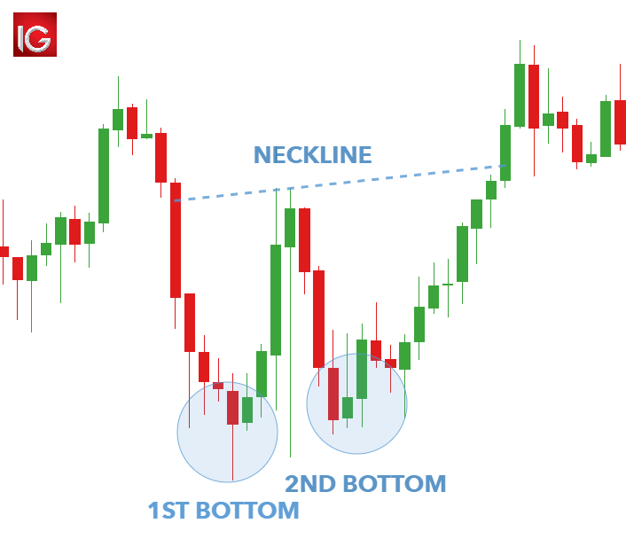
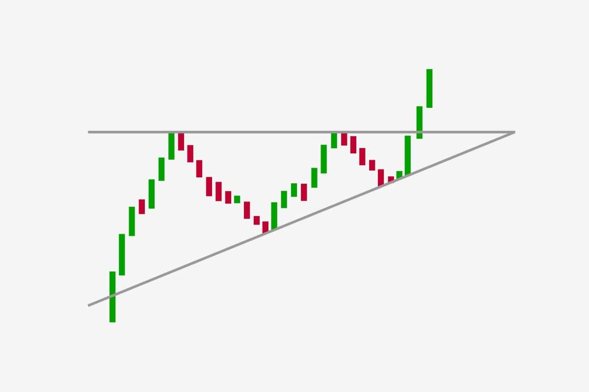
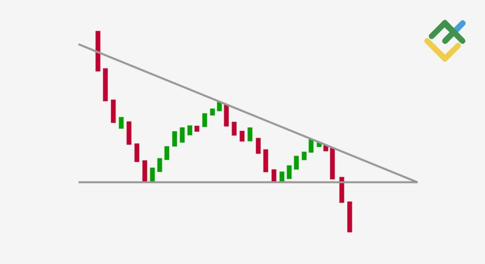
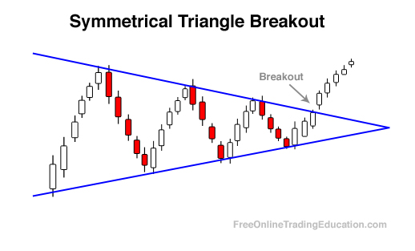

Reversal patterns and Continuation pattern
Reversal patterns mean the formation of candlesticks which indicate the end of the existing trend
(uptrend or downtrend). When such formation appears in a downtrend, it indicates a bullish reversal or end of selling spree and onset of buying spell.
Conversely, when a trend reversal pattern forms in an uptrend, it warns traders of a possible end to bullish run and onset of a slump.
Candlestick patterns are visual patterns, helping traders to visualise when market sentiment is shifting, which is why many traders prefer
candlestick charts over other trading tools.
Continuation patterns are an indication traders look for to signal that a price trend is likely to remain in play.
Traders try to spot these patterns in the middle of an existing trend, and they'll infer that the trend will most
likely resume once the pattern has completed.
Reversal patterns
In this video below it goes over the main
chart patterns that you can look for when you
are trading.
Double Tops-
The double top pattern is interpreted by traders and analysts as a bearish indicator. It implies that the upward trend has slowed down and that a price decrease is more likely.
Double Bottom-
The double bottom pattern is a bullish reversal pattern that occurs at the bottom of a downtrend and signals that the sellers, who were in control of the price action so far, are losing momentum.

Triple Top-
Triple Top Pattern is a bearish reversal pattern that forms after an extended uptrend. It signifies a potential shift in market sentiment from bullish to bearish. The pattern consists of three consecutive peaks at approximately the same price level, with two minor pullbacks in between
Triple Bottom-
The triple bottom is a bullish reversal pattern that occurs at the end of a downtrend. This candlestick pattern suggests an impending change in the trend direction after the sellers failed to break the support in three consecutive attempts.
Head and Shoulders-
A head and shoulders pattern is used in technical analysis. It is a specific chart formation that predicts a bullish-to-bearish trend reversal. The pattern appears as a baseline with three peaks, where the outside two are close in height, and the middle is highest.
Inverse head and shoulders
The inverse head and shoulders chart pattern is a bullish chart formation that signals a potential reversal of a downtrend. It is the opposite of the head and shoulders chart pattern.
Continuation Patterns
Triangles
Ascending Triangle -
An ascending triangle is formed by rising swing lows creating an ascending line when they are connected. The swing highs all reach a similar level, creating a horizontal trendline when they are connected.

Descending Triangle -
A descending triangle is a chart pattern used in technical analysis created by drawing one trend line connecting a series of lower highs and a second horizontal trend line connecting a series of lows

Symmetrical Triangle -
has descending swing highs and ascending swing lows. This creates descending and rising trendlines which converge toward each other. It takes at least two swing highs and two swing lows to create the trendlines necessary to draw a triangle. A third, and sometimes even a fourth, swing high and/or swing low is common before a breakout occurs

Flags

Bear flag -
A bear flag pattern is the opposite of a bull flag pattern, exhibiting an initial downside move followed by an upward consolidation inside a parallel channel. The downside move is called the flagpole, and the upward consolidation channel is the bear flag itself.
Rectangles
Bull Rectangle-
is a chart formation that forms when the market consolidates during an uptrend and is shaped with support and resistance lines. The prevailing trend generally suggests further upward movement. When the price breaks above the resistance, it is supposed to keep rising.
Bear Rectangle -
A bearish rectangle is formed when the price consolidates for a while during a downtrend. After this consolidation it is followed by another strong breakout. This happens because sellers and buyers cannot come to a price agreement, so the price consolidates.